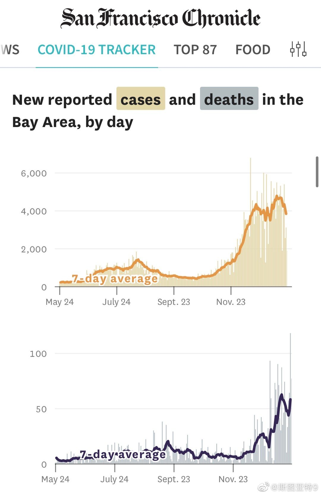

回复@斯图亚特9:湾区ICU空余还真是从一位数突然涨到了23%。看起来这单日100多死亡清空了不少ICU病床…… 评论配图 //@斯图亚特9:回复@Guadalupian:别说，这一天死了100多人，ICU一共才不到500人，还真可能带来一把下降……@斯图亚特9:湾区突然创了个单日死亡记录。确诊数、住院数、ICU数似乎在缓慢下降。 

 评论配图 //@斯图亚特9:回复@Guadalupian:别说，这一天死了100多人，ICU一共才不到500人，还真可能带来一把下降……
评论配图 //@斯图亚特9:回复@Guadalupian:别说，这一天死了100多人，ICU一共才不到500人，还真可能带来一把下降……